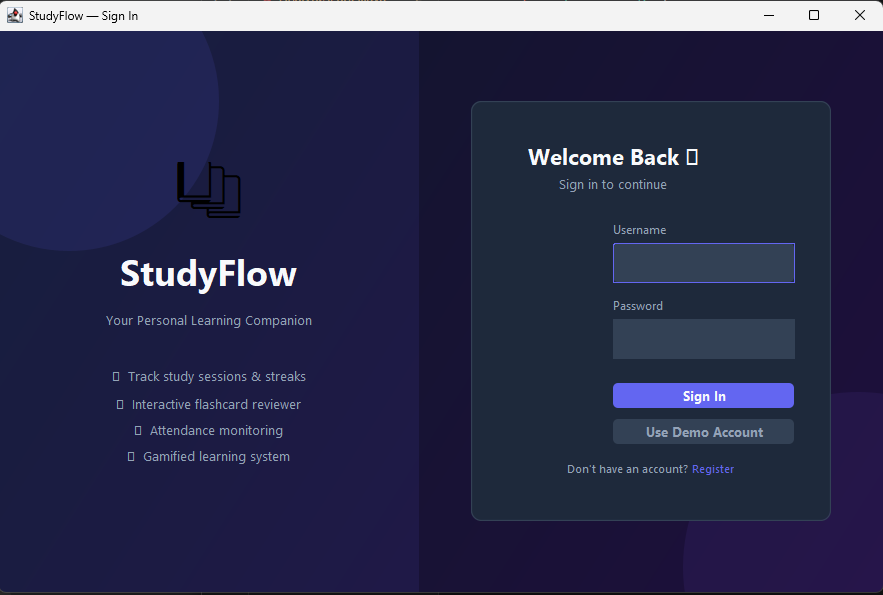
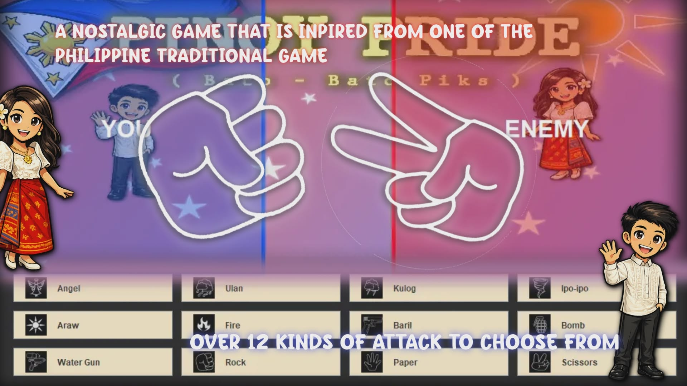

Featured Projects
A showcase of software applications, web designs, and academic projects.

StudyFlow
A desktop student productivity suite built with Java Swing featuring session timers, study analytics, and flashcard review systems.
View Details →
C++ Grocery Chatbot
A CLI-based grocery store assistant utilizing low-level data structures including linked lists, stacks, queues, and sorting algorithms.
View Details →
Pinoy Pride: Bato-Bato Piks
A strategic web game expanding traditional gameplay into a multi-option decision hierarchy with interactive UI animations.
View Details →